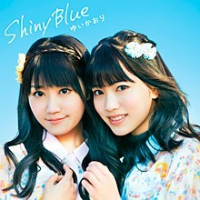
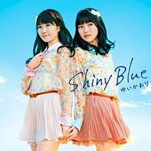

- 
- 
＜初回限定盤＞
品番：KICM-91438
価格：￥1,524＋税
＜通常盤＞
品番：KICM-1438
定価：￥1,143＋税
【収録内容】
1. Shiny Blue (作詞・作曲・編曲：sino)MV視聴
＊PS Vita「～聖魔導物語～」OP主題歌
2. ハツコイメイズ (作詞：こだまさおり／作曲・編曲：板垣祐介)
3. Shiny Blue (off vocal ver.)
4. ハツコイメイズ (off vocal ver.)
★初回限定盤特典★
「Shiny Blue」MUSIC VIDEO収録のDVD付き